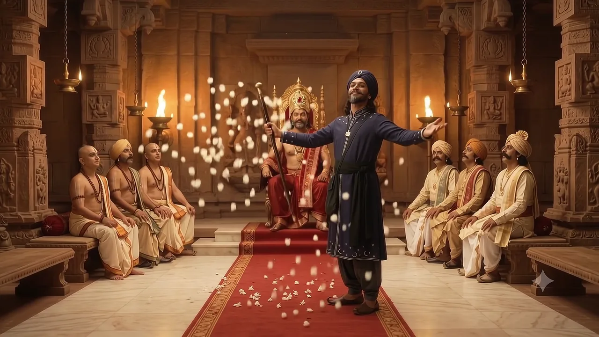
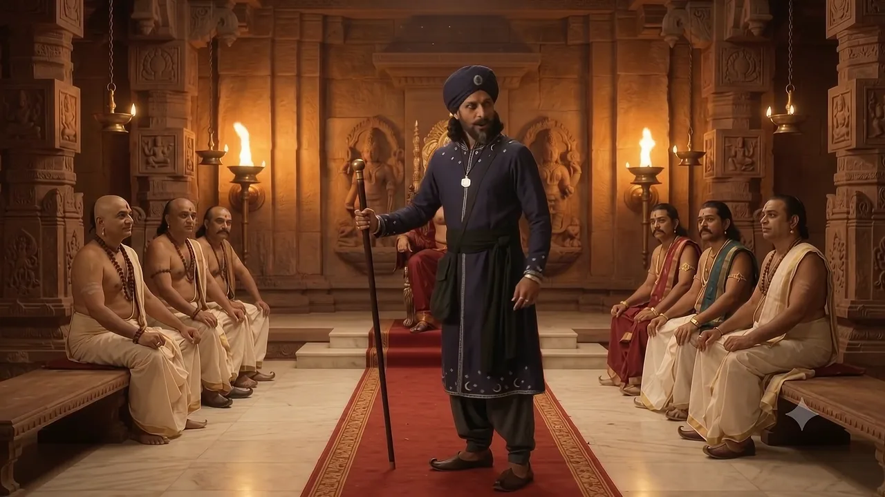
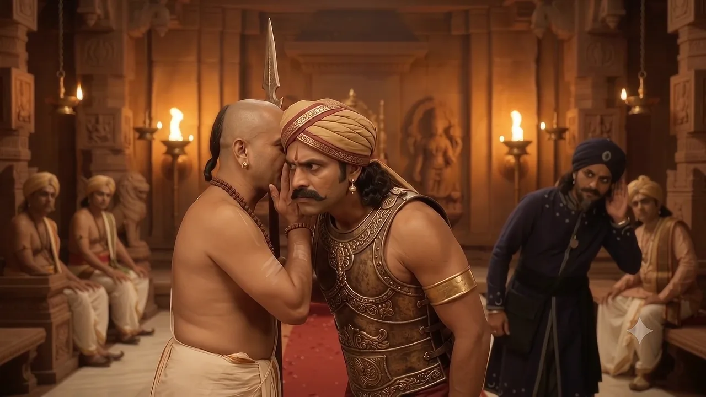
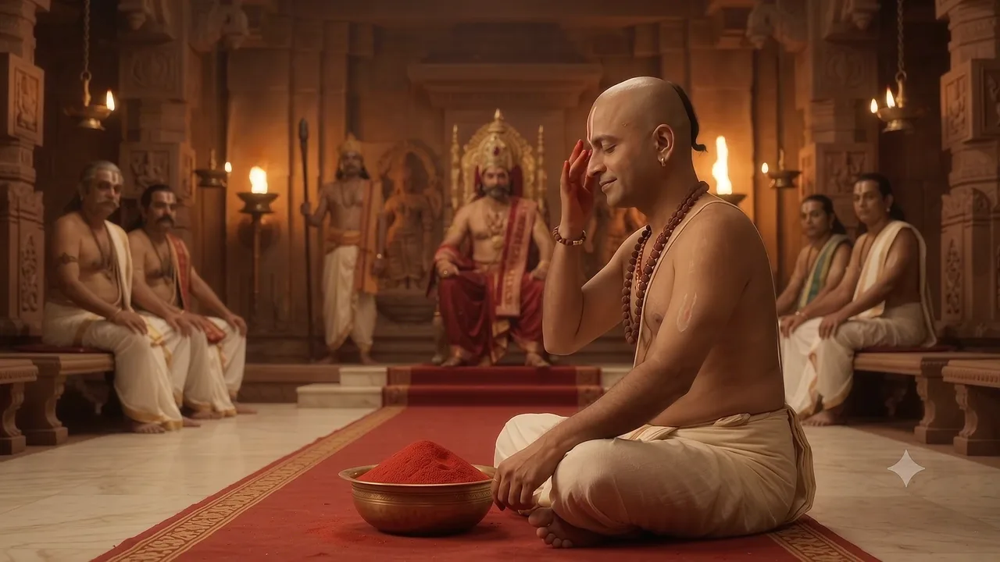
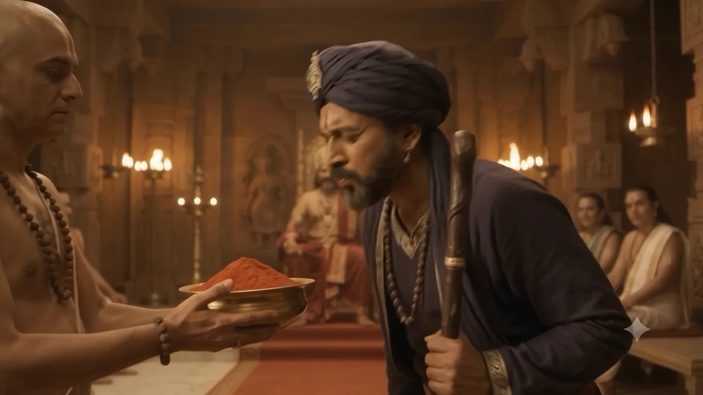
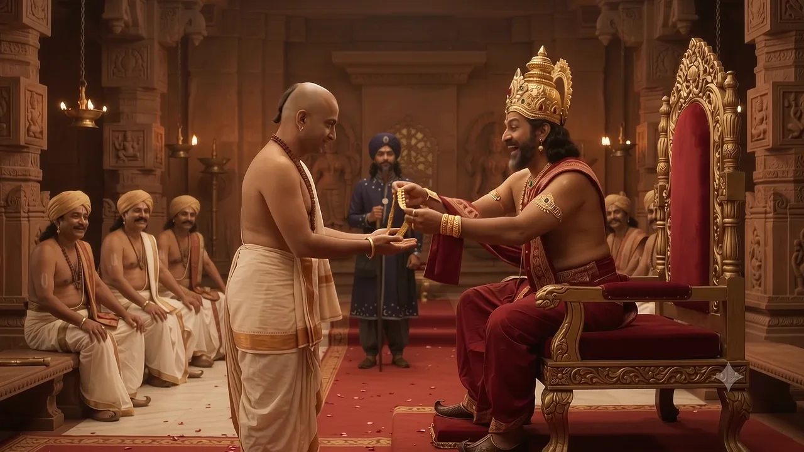

దూరదేశపు మాంత్రికుడు
The Magician from a Distant Land
ఒకరోజు దూరదేశం నుంచి ఒక గొప్ప మాంత్రికుడు రాజసభకు వచ్చాడు. భుజానికి ఒక గుడ్డ సంచి వేలాడుతుండగా, రాజుకు వంగి నమస్కరించాడు.
One day, a great magician from a distant land arrived at the royal court. With a cloth bag hanging at his side, he bowed low before the King.
అతను తన దండాన్ని ఊపగానే, ఖాళీ గాలిలోంచి మల్లెపూల వాన కురిసింది! సభికులు ఆశ్చర్యంతో నోరెళ్లబెట్టారు.
He waved his staff — and jasmine flowers showered down out of thin air! The courtiers gasped in wonder.
మాంత్రికుడు రాజుకు మళ్ళీ వంగి నమస్కరించి, మంత్రుల వరుస వైపు చిన్నచూపుగా చూశాడు.
The magician bowed to the King again — then threw a scornful look at the row of ministers.
తల మీద పందెం
A Wager of Heads
మాంత్రికుడు సభ మధ్యలో నిలబడి, అందరి వైపు వేలు చూపిస్తూ గర్వంగా సవాల్ విసిరాడు.
Standing in the middle of the court, the magician pointed around the hall and threw down a proud challenge.
సభ మొత్తం మౌనం. మంత్రులు తలలు దించుకున్నారు. ఒక్క కవి మాత్రం ముందుకొచ్చాడు — కానీ ఎలా గెలుస్తాడో ఎవరికీ తెలియదు.
The whole court fell silent. The ministers looked down at their feet. Only one poet stepped forward — but how would he win? No one knew.
మాంత్రికుడు తల వెనక్కి వాల్చి పెద్దగా నవ్వాడు — ఇంత చిన్న పందెమా అన్నట్టు!
The magician threw his head back and roared with laughter — as if to say, is that all?
అగ్నివర్ణ తండుల చూర్ణం
Agnivarna Tandula Churnam
భటుడు అయోమయంగా చూశాడు — అలాంటి పేరు అతను ఎప్పుడూ వినలేదు. రామకృష్ణ అతని చెవి దగ్గరకు వంగి, చేయి అడ్డం పెట్టి ఏదో గుసగుసగా చెప్పారు. భటుడి ముఖం వెలిగిపోయింది; తల ఊపి పరుగున వెళ్ళాడు.
The guard stared back, totally confused — he had never heard such a name. Ramakrishna leaned to his ear, cupped his hand and whispered something. The guard's face lit up; he nodded and hurried out.
కాసేపటికి సభ మధ్యలోకి ఎర్రటి పొడితో నిండిన ఒక ఇత్తడి గిన్నె వచ్చింది.
A little later, a brass bowl heaped with bright red powder was carried into the middle of the court.
కళ్ళు మూసుకుని…
With Eyes Closed…
రామకృష్ణ సభ మధ్యలో పద్మాసనం వేసుకుని కూర్చున్నారు. కళ్ళు గట్టిగా మూసుకుని, ఆ పొడిని మునివేళ్లతో మూసిన కనురెప్పలపై రాసుకున్నారు. సభికులు ఉలిక్కిపడ్డారు; ఒక మంత్రి అయితే తన కళ్ళే మూసేసుకున్నాడు!
Ramakrishna sat cross-legged in the middle of the court. He shut his eyes tight and touched the powder onto his closed eyelids with his fingertips. The courtiers gasped — one minister even covered his own eyes!
తర్వాత తెల్లని గుడ్డతో ముఖం నెమ్మదిగా తుడుచుకుని, నవ్వుతూ కళ్ళు తెరిచారు.
Then he slowly wiped his face with a white cloth, and opened his eyes with a smile.
⚠ ఇది కథ మాత్రమే — ఇంట్లో ప్రయత్నించకండి.
⚠ This is only a story — please don't try it at home.
మాంత్రికుడి ఓటమి
The Magician Gives Up
మాంత్రికుడు కళ్ళు పెద్దవి చేసి ఒక చిటికెడు పొడి తీశాడు… కానీ చేయి అక్కడే ఆగిపోయింది. మెల్లగా దాన్ని తిరిగి గిన్నెలో వేసేశాడు.
The magician opened his eyes wide and lifted a pinch of the powder… but his hand froze. Quietly, he put it back in the bowl.
గిన్నె దగ్గరకు వంగగానే — హాచ్! హాచ్! హాచ్! — మూడుసార్లు తుమ్మాడు. ఎర్రటి పొడి మబ్బులా పైకి లేచింది; సభ మొత్తం గొల్లుమంది.
As he leaned closer — Achoo! Achoo! Achoo! — he sneezed three times. A red puff of powder rose like a cloud, and the whole court burst out laughing.
అసలు మాయ
The Real Magic
రాజు కళ్ళు ఆనందంతో పెద్దవయ్యాయి. గిన్నె వైపు, రామకృష్ణ వైపు చూసి, సింహాసనం చేతిని చరుస్తూ పగలబడి నవ్వారు.
The King's eyes went wide with happy disbelief. He looked at the bowl, then at Ramakrishna — and burst into laughter, slapping the arm of his throne.
మాంత్రికుడు ఆ పొడిని వేళ్లతో నలిపి వాసన చూశాడు… తర్వాత నెమ్మదిగా తన మీద తానే నవ్వుకున్నాడు.
The magician rubbed the powder between his fingers and sniffed it… then slowly broke into a rueful smile.
⚠ పిల్లలూ, ఇది కథ మాత్రమే. కళ్ళలో ఏ పొడీ ఎప్పుడూ రాసుకోకండి!
⚠ Children, this is only a story. Never put any powder in your eyes!
గొప్పలు చెప్పేవాడికంటే ఆలోచించి మాట్లాడేవాడే నిజమైన తెలివైనవాడు.
The one who thinks before he speaks is wiser than the one who boasts.
రంగు చూసి, పేరు విని భయపడకూడదు — ముందు అది ఏమిటో అడిగి తెలుసుకోవాలి. గర్వంతో సవాల్ విసిరేవాడికంటే ప్రశాంతంగా ఆలోచించేవాడే గెలుస్తాడు. ఓడిపోయినవాడిని అవమానించకుండా పైకి లేపడమే నిజమైన గొప్పతనం.
Don't be frightened by a colour or a grand name — first ask what something really is. The calm thinker wins over the one who throws out proud challenges. And true greatness is lifting up the one who lost, instead of humiliating him.
గొప్పలు చెప్పేవాడికంటే ఆలోచించి మాట్లాడేవాడే నిజమైన తెలివైనవాడు. గర్వంతో సవాల్ విసరడం కంటే, ప్రశాంతంగా ఆలోచించడమే అసలైన బలం.
The one who thinks before he speaks is wiser than the one who boasts. Calm thinking is a greater strength than proud challenges.
అగ్నివర్ణం అంటే ఎర్రని రంగు, తండులం అంటే బియ్యం, చూర్ణం అంటే పిండి — అంటే ఎర్ర రంగు బియ్యప్పిండి! ఆ గంభీరమైన పేరు, ఆ ఎర్రటి రంగు చూసి అందరూ అది ఘాటైన పొడి అనుకున్నారు.
Agnivarna means fire-red colour, Tandula means rice and Churnam means powder or flour — so it was simply red-coloured rice flour! The grand name and the bright red colour made everyone think it was something fiery.
ఎర్రటి పొడిని చూసి భయపడ్డాడు. అది అసలు ఏమిటో అడగకుండానే ఓటమి ఒప్పుకున్నాడు. రామకృష్ణ కవిగారు మాయతో కాదు — మాటలతో, ఆలోచనతో గెలిచారు.
He judged the red powder by its looks and was afraid. He gave up without ever asking what it really was. Ramakrishna won not with magic, but with words and clear thinking.
అవును, 6+ వయసు పిల్లలకు చాలా నచ్చుతుంది. కానీ ఇది కథ మాత్రమే — కళ్ళలో ఏ పొడీ ఎప్పుడూ రాసుకోకూడదని పిల్లలకు తప్పక చెప్పండి.
Yes — children aged 6 and above will love it. But it is only a story: please remind children never to put any powder in their eyes.
తెనాలి రామకృష్ణ కథలు — RayalSabha · @Rayalsabha చానెల్ Subscribe చేయండి
ఇంకా 19 తెనాలి కథలు వస్తున్నాయి!
Subscribe చేయండి — ఒక్క కథ కూడా miss అవ్వకండి.